第 7 章 失业与劳动力市场Unemployment and Labor Market
对应文件：
notes7.ppt｜ 页码：7-1 ~ 7-45 ｜ 共 45 页本章是第 3 章劳动市场的延伸：第 3 章假设工资弹性、市场出清、无失业；本章引入离职率 s、入职率 f、工资刚性，解释为什么自然失业率大于零。
本章地图
| 区段 | 页码 | 内容 |
|---|---|---|
| 导论 | 7-1 ~ 7-4 | 章首、目标、自然失业率定义、美国实际与自然失业率 |
| 自然率的第一个模型 | 7-5 ~ 7-11 | 记号、假设、稳态条件、求解、政策含义 |
| 摩擦性失业 | 7-12 ~ 7-21 | 求职、部门转移、结构变迁、公共政策、失业保险 |
| 结构性失业 | 7-22 ~ 7-31 | 实际工资刚性、工作配额、最低工资、工会、效率工资 |
| 讨论与时长 | 7-32 ~ 7-35 | 政策讨论题、失业持续时间、长期失业 |
| 趋势解释 | 7-36 ~ 7-42 | 最低工资、工会、部门转移、人口结构、欧洲失业 |
| 总结 | 7-43 ~ 7-45 | 本章总结 |
7-1Chapter 7 Unemployment and Labor Market
Chapter 7:
Unemployment and Labor Market
第 7 章
失业与劳动力市场
- 本章回答一个看似简单的问题：为什么在均衡中仍有失业？答案分两类——摩擦性（找工作要时间）与结构性（工资降不下来）。
7-2Chapter objectives
| 原文 | 中文对照 |
|---|---|
| Chapter objectives | 本章目标 |
| The natural rate of unemployment: | 自然失业率： |
| what it means | 它意味着什么 |
| what causes it | 什么导致它 |
| understanding its behavior in the real world | 理解它在现实世界中的表现 |
- 三个目标层层递进：定义（7-3）→ 成因（7-5 ~ 7-31）→ 现实表现（7-33 ~ 7-42）。
7-3Natural Rate of Unemployment（自然失业率）
| 原文 | 中文对照 |
|---|---|
| Natural Rate of Unemployment（自然失业率） | 自然失业率 |
| Natural rate of unemployment: the average rate of unemployment around which the economy fluctuates. | 自然失业率：经济围绕其波动的平均失业率。 |
| In a recession, the actual unemployment rate rises above the natural rate. | 衰退时，实际失业率高于自然率。 |
| In a boom, the actual unemployment rate falls below the natural rate. | 繁荣时，实际失业率低于自然率。 |
教师备注（原文＋译文）2 段
教师备注（原文照录）
The natural rate of unemployment is the "normal" unemployment rate the economy experiences when it is neither in a recession nor a boom.
教师备注（译文）
自然失业率是经济既不在衰退也不在繁荣时所经历的「正常」失业率。
- 定义要点：自然率是趋势值，不是最低值——它本身大于零，且不随周期波动。
- 与「周期性失业」的区别：实际 − 自然 = 周期性失业（第 11–15 章的主题）。
7-4Actual and natural rates of unemployment, U.S., 1950–2020
| 原文 | 中文对照 |
|---|---|
| Actual and natural rates of unemployment, U.S., 1950–2020 | 美国实际与自然失业率，1950–2020 |
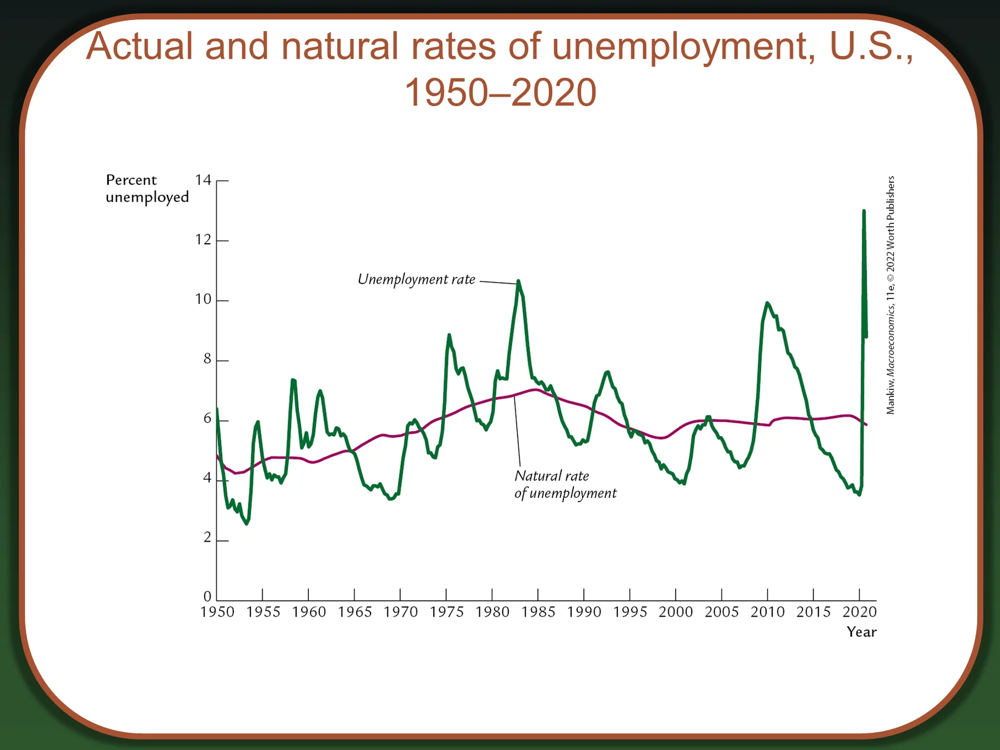
教师备注（原文＋译文）12 段
教师备注（原文照录）
Similar to Figure 7-1, in the textbook.
The actual unemployment rate fluctuates considerably over the short run. These fluctuations are the focus of Part IV of the book.
For this chapter, though, our goal is to understand the behavior of the natural rate of unemployment, essentially the long-run trend in the unemployment rate.
Source: BLS, obtained from http://research.stlouisfed.org/fred2/
NROU (Natural Rate)
UNRATE (Unemployment rate)
教师备注（译文）
与教材图 7-1 类似。
实际失业率在短期波动很大。这些波动是本书第四部分的重点。
但本章的目标是理解自然失业率的行为，本质上就是失业率的长期趋势。
来源：BLS，取自 http://research.stlouisfed.org/fred2/
NROU（自然率）
UNRATE（失业率）
- 两条线：实际失业率（UNRATE）剧烈波动，自然率（NROU）平滑。
- 三个峰：1975 年约 9%、1982 年约 10%、2009 年约 10%、2020 年约 13%——都是衰退期实际率远超自然率。
- 序列代码：UNRATE、NROU。
7-5A first model of the natural rate
| 原文 | 中文对照 |
|---|---|
| A first model of the natural rate | 自然率的第一个模型 |
| Notation: | 记号： |
| L = # of workers in labor force | L = 劳动力中的工人数 |
| E = # of employed workers | E = 就业工人数 |
| U = # of unemployed | U = 失业人数 |
| U/L = unemployment rate | U/L = 失业率 |
教师备注（原文＋译文）2 段
教师备注（原文照录）
Section 6-1
教师备注（译文）
第 6-1 节
- 恒等式：L = E + U，因此失业率 u = U/L。
- 这套记号与第 2 章的家庭调查（2-56）完全一致，只是把「存量」动态化了。
7-6Assumptions
| 原文 | 中文对照 |
|---|---|
| Assumptions: | 假设： |
| 1. L is exogenously fixed. | 1. L 是外生固定的。 |
| 2. During any given month, | 2. 在任意给定月份， |
| s = fraction of employed workers that become separated from their jobs, | s = 就业工人中失去或离开工作的比例， |
| f = fraction of unemployed workers that find jobs. | f = 失业工人中找到工作的比例。 |
| s = rate of job separations（离职率） | s = 离职率 |
| f = rate of job finding (入职率） | f = 入职率 |
| (both exogenous) | （两者都是外生的） |
- 两个关键参数：s（离职率，job separation rate） 与 f（入职率，job finding rate），均外生。
- 假设 1（L 固定）的作用：把问题简化为「在 E 与 U 之间分配固定的人数」，不涉及人口增长。
7-7The transitions between employment and unemployment
| 原文 | 中文对照 |
|---|---|
| The transitions between employment and unemployment | 就业与失业之间的转换 |
| s × E | s × E |
| Employed | 就业 |
| Unemployed | 失业 |
| f × U | f × U |
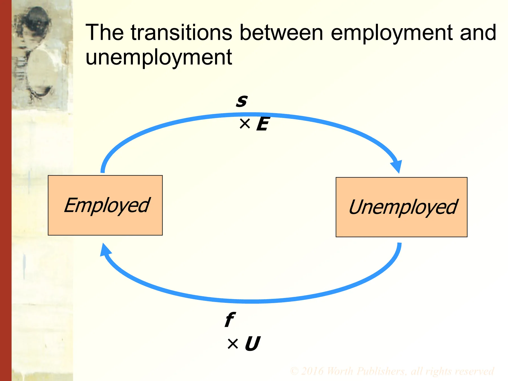
教师备注（原文＋译文）4 段
教师备注（原文照录）
Figure 7-2, p. 185
(Note: The size of the boxes containing the words "employed" and "unemployed" are not proportional to the number of people in each category.)
教师备注（译文）
图 7-2，第 185 页
（注：标有「就业」与「失业」的两个方框大小并不与各类别人数成比例。）
- 两个流：就业 → 失业：s × E；失业 → 就业：f × U。
- 稳态的条件就是这两股流相等（7-8），此时 U 不变。
7-8The steady state condition
| 原文 | 中文对照 |
|---|---|
| The steady state condition | 稳态条件 |
| Definition: the labor market is in steady state (稳定状态), or long-run equilibrium, if the unemployment rate is constant. | 定义：如果失业率不变，劳动市场处于稳态，或长期均衡。 |
| The steady-state condition is: | 稳态条件是： |
| s E = f U | s × E = f × U |
| # of unemployed people who find jobs | 找到工作的失业人数 |
| # of employed people who lose or leave their jobs | 失去或离开工作的就业人数 |
- 稳态 = 流入 = 流出：sE = fU。
- 注意这是「失业率不变」的条件，不是「没有人失业」——稳态下仍有 U > 0。
7-9Solving for the "equilibrium" U rate
| 原文 | 中文对照 |
|---|---|
| Solving for the "equilibrium" U rate | 求解「均衡」失业率 |
| f U = s E | f × U = s × E |
| = s (L – U) | = s ×（L − U） |
| = s L – s U | = s × L − s × U |
| Solve for U/L: | 解出 U/L： |
| (f + s)U = s L | （f + s）× U = s × L |
| so, | 所以， |
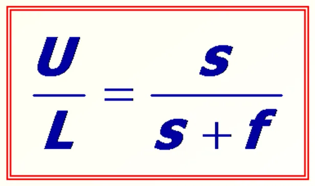
U/L = s / (s + f)
- 推导三步：把 E 换成 L−U → 移项合并 → 两边除以 L。
- 结果：u = s/(s+f)。这是本章最重要的公式。
- 性质：s↑ → u↑；f↑ → u↓。若 f = 1（瞬时找到工作），则 u = 0（7-12）。
7-10Example
| 原文 | 中文对照 |
|---|---|
| Example: | 例： |
| Each month, 1% of employed workers lose their jobs (s = 0.01) | 每月有 1% 的就业工人失去工作（s = 0.01） |
| Each month, 19% of unemployed workers find jobs (f = 0.19) | 每月有 19% 的失业工人找到工作（f = 0.19） |
| Find the natural rate of unemployment: | 求自然失业率： |
计算（照录）
U/L = s/(s + f) = 0.01/(0.01 + 0.19) = 0.01/0.20 = 0.05 = 5%
- 结果 5%：这就是美国自然失业率的量级。
- 直觉：每月只有 1% 的人离职，但有 19% 的失业者找到工作——两个比例相差 19 倍，稳态失业率因此是 5%。
7-11Policy implication
| 原文 | 中文对照 |
|---|---|
| Policy implication | 政策含义 |
| A policy that aims to reduce the natural rate of unemployment will succeed only if it lowers s or increases f. | 旨在降低自然失业率的政策，只有在下调 s 或提高 f 时才会成功。 |
- 判据只有两条：降 s（减少离职）或升 f（加快再就业）。其他政策（如直接创造岗位）若不改变 s 或 f，长期无效。
- 这条判据是 7-17 ~ 7-21（求职政策、失业保险）与 7-25 ~ 7-31（工资刚性）的分析框架。
7-12Why is there unemployment?
| 原文 | 中文对照 |
|---|---|
| Why is there unemployment? | 为什么会有失业？ |
| If job finding were instantaneous (f = 1), then all spells of unemployment would be brief, and the natural rate would be near zero. | 如果找工作瞬时完成（f = 1），所有失业期都会很短，自然率将接近零。 |
| There are two reasons why f < 1: | f < 1 有两个原因： |
| 1. job search（寻找工作） | 1. 求职 |
| 2. wage rigidity（工资刚性） | 2. 工资刚性 |
- 全章的结构句：f < 1 的两个原因 = 摩擦性失业（求职）+ 结构性失业（工资刚性）。
- 这两个原因对应本章两大板块：7-13 ~ 7-21（求职）与 7-22 ~ 7-31（刚性）。
7-13Job Search & Frictional Unemployment（摩擦性失业）
| 原文 | 中文对照 |
|---|---|
| Job Search & Frictional Unemployment（摩擦性失业） | 求职与摩擦性失业 |
| frictional unemployment: caused by the time it takes workers to search for a job | 摩擦性失业：由工人寻找工作所需的时间造成 |
| occurs even when wages are flexible and there are enough jobs to go around | 即使工资弹性、岗位充足也会发生 |
| occurs because | 发生的原因是 |
| workers have different abilities, preferences | 工人的能力与偏好不同 |
| jobs have different skill requirements | 工作的技能要求不同 |
| geographic mobility of workers not instantaneous | 工人的地理流动不是瞬时的 |
| flow of information about vacancies and job candidates is imperfect | 关于职位空缺与求职者的信息流动不完善 |
- 定义的关键限定：即使工资弹性、岗位数量足够，摩擦性失业仍存在——它不是「需求不足」造成的。
- 四条原因可分两组：异质性（能力/技能不匹配）与摩擦（地理流动、信息不完善）。
- 政策含义：改善信息与培训可以降低它（7-17），但无法消除。
7-14Sectoral shifts（部门转移）
| 原文 | 中文对照 |
|---|---|
| Sectoral shifts（部门转移） | 部门转移 |
| def: changes in the composition of demand among industries or regions | 定义：行业或地区之间需求构成的变化 |
| example: Technological change increases demand for computer repair persons, decreases demand for typewriter repair persons | 例：技术变化增加对电脑维修人员的需求，减少对打字机维修人员的需求 |
| example: A new international trade agreement causes greater demand for workers in the export sectors and less demand for workers in import-competing sectors. | 例：新的国际贸易协定使出口部门对工人的需求增加，使进口竞争部门的需求减少。 |
| It takes time for workers to change sectors, so sectoral shifts cause frictional unemployment. | 工人转换部门需要时间，所以部门转移造成摩擦性失业。 |
教师备注（原文＋译文）2 段
教师备注（原文照录）
Sometimes the unemployment caused by sectoral shifts is severe. Due to increasing imports, the British car industry has been in decline for years. Many workers in this industry have lost jobs. Many of these workers are in their 50s and have worked in this industry for decades. Such workers are unlikely to have the skills necessary to get jobs available in newly booming industries, and they are less likely to invest in the acquisition of the necessary skills for these jobs. Hence, such workers are at greater risk for becoming "discouraged workers."
教师备注（译文）
有时部门转移造成的失业很严重。由于进口增加，英国汽车工业已衰退多年，许多工人失业。这些工人中许多已五十多岁、在该行业工作了几十年。这类工人不太可能具备新兴繁荣行业所需岗位的技能，也不太可能投资去获得这些技能。因此，这类工人成为「灰心丧气的求职者」的风险更大。
- 定义：需求构成在行业/地区间的变化，不是总需求的变化。
- 两个例子都是「技术/贸易 → 需求重新分配」：电脑 vs 打字机、出口部门 vs 进口竞争部门。
- 备注的补充：年龄偏大的失业者技能转换成本最高，容易退出劳动力（成为 discouraged workers），从而被排除在失业统计之外（2-56）。
7-15CASE STUDY: Structural change over the long run
| 原文 | 中文对照 |
|---|---|
| CASE STUDY: Structural change over the long run | 案例研究：长期中的结构变迁 |
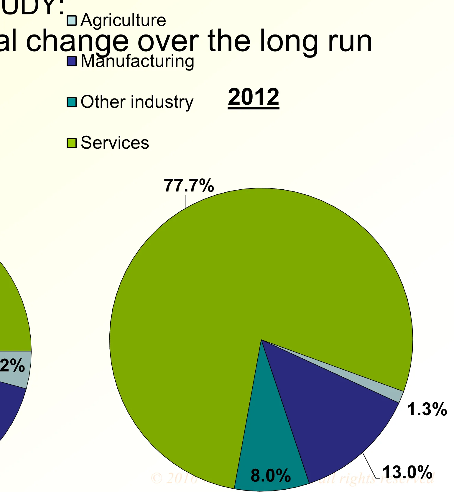
教师备注（原文＋译文）18 段
教师备注（原文照录）
All figures are industry shares in U.S. GDP. "Other industry" includes construction, mining, electricity, water, and gas.
From 1960 to 2012, there are huge changes in all four categories. Manufacturing falls by over half.
Even the "tiny" category of agriculture drops by about three-fourths.
As a result of these huge structural shifts, the types of jobs available now are vastly different than just two generations ago.
Source: World Development Indicators, World Bank.
Series Name Series Code
Agriculture, value added (% of GDP) NV.AGR.TOTL.ZS
Manufacturing, value added (% of GDP) NV.IND.MANF.ZS
Services, etc., value added (% of GDP) NV.SRV.TETC.ZS
教师备注（译文）
所有数字都是各行业占美国 GDP 的份额。「其他行业」包括建筑、采矿、电力、水与燃气。
1960 到 2012 年，四个类别都发生了巨大变化。制造业下降超过一半。
即使是「很小」的农业类别也下降了约四分之三。
这些巨大的结构变迁的结果是：现在可获得的岗位类型与仅仅两代人之前大不相同。
来源：世界银行《世界发展指标》。
序列名称与代码：
农业增加值（占 GDP %）NV.AGR.TOTL.ZS
制造业增加值（占 GDP %）NV.IND.MANF.ZS
服务业等增加值（占 GDP %）NV.SRV.TETC.ZS
- 三个量化事实：制造业份额下降超过一半；农业下降约四分之三；服务业份额大幅上升。
- 意义：结构变迁不是偶发事件，而是持续几十年的常态，因此摩擦性失业是结构性的、无法归零。
- 序列代码可直接查数：NV.AGR.TOTL.ZS、NV.IND.MANF.ZS、NV.SRV.TETC.ZS。
7-16More examples of sectoral shifts
| 原文 | 中文对照 |
|---|---|
| More examples of sectoral shifts | 更多部门转移的例子 |
| Industrial revolution (1800s): agriculture declines, manufacturing soars | 工业革命（1800 年代）：农业下降，制造业飙升 |
| Energy crisis (1970s): demand shifts from larger cars to smaller ones | 能源危机（1970 年代）：需求从大车转向小车 |
| "China" Shock (2000–2010s): decline in manufacturing (located in the Midwest), services (located along the coasts) soar. | 「中国」冲击（2000–2010 年代）：制造业（位于中西部）衰退，服务业（位于沿海）飙升。 |
| Health care spending as % of GDP: 1960: 5.2 2000: 13.8 1980: 9.1 2020: 17.7 | 医疗支出占 GDP 比重：1960 年 5.2；1980 年 9.1；2000 年 13.8；2020 年 17.7 |
| In our dynamic economy, smaller sectoral shifts occur frequently, contributing to frictional unemployment. | 在我们这个动态经济中，较小的部门转移频繁发生，造成摩擦性失业。 |
教师备注（原文＋译文）8 段
教师备注（原文照录）
Most of the examples on this and the previous slides are big changes that have occurred over many years. These examples give students a good idea of what sectoral shifts are. Perhaps more important for the natural rate, though, are the many smaller changes that occur more frequently. Ours is a dynamic economy: the structure of demand is shifting almost continuously, due to changes in preferences, technology, and the location of production. As a result, there is a near-continual flow of newly frictionally unemployed workers.
Sectoral shifts are distinct from recessions (which also cause unemployment). In recessions, there is a general fall in demand across industries, and the unemployment that results is cyclical. Sectoral shifts, though, are changes in the composition of demand across industries, and lead to frictional unemployment as described above.
Source of health expenditure data:
http://www.cms.hhs.gov/NationalHealthExpendData/02_NationalHealthAccountsHistorical.asp#TopOfPage
教师备注（译文）
本页与上一页的多数例子都是历经多年的大变化。这些例子让学生对什么是部门转移有清晰认识。但对自然率而言，也许更重要的是那些更频繁发生的小变化。我们的经济是动态的：由于偏好、技术与生产区位的变化，需求结构几乎在持续移动。结果是，新产生的摩擦性失业者几乎源源不断。
部门转移与衰退（也会造成失业）不同。衰退中，各行业需求普遍下降，由此产生的失业是周期性的。而部门转移是行业间需求构成的变化，导致上文所述的摩擦性失业。
医疗支出数据来源：
http://www.cms.hhs.gov/NationalHealthExpendData/02_NationalHealthAccountsHistorical.asp#TopOfPage
- 医疗支出的四个数字：1960 年 5.2% → 1980 年 9.1% → 2000 年 13.8% → 2020 年 17.7%，六十年上升 12.5 个百分点。
- 备注的核心区分（考试常考）：部门转移 = 构成变化 → 摩擦性失业；衰退 = 总量下降 → 周期性失业。
- 「小变化比大变化更重要」：自然率主要由持续的、微小的结构变动累积而成。
7-17Public Policy and Job Search
| 原文 | 中文对照 |
|---|---|
| Public Policy and Job Search | 公共政策与求职 |
| Govt programs affecting unemployment | 影响失业的政府项目 |
| Govt employment agencies: disseminate info about job openings to better match workers & jobs | 政府就业机构：传播职位空缺信息，以更好地匹配工人与岗位 |
| Public job training programs: help workers displaced from declining industries get skills needed for jobs in growing industries | 公共职业培训项目：帮助从衰退行业被排挤出的工人获得新兴行业岗位所需的技能 |
- 两项政策都作用于 f（入职率）：前者降低信息摩擦，后者降低技能摩擦。
- 政策逻辑与 7-11 的判据一致：能提高 f 才有效。
7-18Unemployment insurance (UI)
| 原文 | 中文对照 |
|---|---|
| Unemployment insurance (UI) | 失业保险 |
| UI pays part of a worker's former wages for a limited time after losing his/her job. | 失业保险在工人失业后的一段时间内支付其原工资的一部分。 |
| UI increases unemployment, because it: | 失业保险会增加失业，因为它： |
| reduces the opportunity cost of being unemployed | 降低失业的机会成本 |
| reduces the urgency of finding work | 降低找工作的紧迫性 |
| hence, reduces f | 因此降低 f |
| Studies: The longer a worker is eligible for UI, the longer the duration of the average spell of unemployment. | 研究：工人有资格领取失业保险的时间越长，平均失业期越长。 |
教师备注（原文＋译文）2 段
教师备注（原文照录）
The text includes a nice case study on unemployment insurance. It discusses evidence that unemployment insurance reduces the job finding rate.
教师备注（译文）
教材中有一个关于失业保险的精彩案例研究，讨论了失业保险降低入职率的证据。
- 传导链：UI → 失业的机会成本下降 → 求职紧迫性下降 → f 下降 → 失业率上升。
- 这是「道德风险」在劳动市场的体现：保险降低了失业的痛苦，从而改变了行为。
- 与 7-20 的张力：UI 也有好处（更好的匹配），所以是效率与保险的权衡，而非单纯的「坏政策」。
7-19Unemployment insurance (UI) during Covid in the United States
| 原文 | 中文对照 |
|---|---|
| Unemployment insurance (UI) during Covid in the United States | 美国新冠期间的失业保险 |
| Additional 13-week extension starting March 2020, with an extra 600 dollars a week (CARES Act). | 2020 年 3 月起额外延长 13 周，每周额外 600 美元（《CARES 法案》）。 |
| Additional 11-week extension starting December 2020, with an extra 300 or 400 dollars a week depending on the state and other eligibility requirements. | 2020 年 12 月起额外延长 11 周，每周额外 300 或 400 美元，取决于州与其他资格要求。 |
| Additional 25-week extension starting March 2021, with an extra 300 dollars a week (American Rescue Plan). | 2021 年 3 月起额外延长 25 周，每周额外 300 美元（《美国救援计划》）。 |
| Extra $ per week due to outdated computer systems and adjusting the replacement rate. | 每周额外金额源于过时的计算机系统以及替代率的调整。 |
| Initial research finding that the extra 600 dollars a week did not cause unemployment. | 初步研究发现，每周额外 600 美元并未导致失业增加。 |
教师备注（原文＋译文）14 段
教师备注（原文照录）
Covid was one of the largest expansions of UI in U.S. history. Although students might only know about the direct checks ("stimmys"), the UI expansion was a major part of the response.
Sources for final bullet point:
Altonji et al. "Employment Effects of Unemployment Insurance Generosity During the Pandemic"
Bartik et al. "Measuring the Labor Market at the Onset of the COVID-19 Crisis"
Dube "The Impact of the Federal Pandemic Unemployment Compensation on Employment: Evidence from the Household Pulse Survey"
Marinescu et al. "Job Search, Job Posting and Unemployment Insurance During the COVID-19 Crisis"
Great Recession: Expansions allowed for a maximum of 99 weeks of benefits. Briefly paid out an extra 25 dollars a week.
教师备注（译文）
新冠是美国历史上最大规模的失业保险扩张之一。虽然学生可能只知道直接发放的支票（「刺激支票」），但失业保险的扩张是应对措施的主要部分。
最后一条要点的来源：
Altonji 等，「Employment Effects of Unemployment Insurance Generosity During the Pandemic」
Bartik 等，「Measuring the Labor Market at the Onset of the COVID-19 Crisis」
Dube，「The Impact of the Federal Pandemic Unemployment Compensation on Employment: Evidence from the Household Pulse Survey」
Marinescu 等，「Job Search, Job Posting and Unemployment Insurance During the COVID-19 Crisis」
大衰退：扩张措施允许最长 99 周的救济金，并短暂每周额外支付 25 美元。
- 三轮扩张的时间与规模：2020-03 起 +13 周/+600 美元；2020-12 起 +11 周/+300 或 400 美元；2021-03 起 +25 周/+300 美元。
- 关键实证结论：每周额外 600 美元并未显著增加失业——这与 7-18 的理论预测相反，原因是疫情期间岗位本身消失（需求冲击），而非工人不愿找工作。
- 历史对照（备注）：大衰退期间最长可领 99 周，额外仅 25 美元/周。
7-20Benefits of UI
| 原文 | 中文对照 |
|---|---|
| Benefits of UI | 失业保险的好处 |
| By allowing workers more time to search, | 通过给工人更多搜寻时间， |
| UI may lead to better matches between jobs and workers, | 失业保险可能带来更好的岗位—工人匹配， |
| which would lead to greater productivity and higher incomes. | 从而提高生产率与收入。 |
- 反向机制：UI → 搜寻时间增加 → 匹配质量提高 → 生产率上升。
- 这是「效率工资式」的论证：短期失业率上升，长期匹配质量改善。与 7-18 的负效应构成权衡。
- 政策结论：UI 的最优水平不是零，而是使两种效应在边际上相等。
7-21UI: Replacement Rates
| 原文 | 中文对照 |
|---|---|
| UI: Replacement Rates | 失业保险：替代率 |
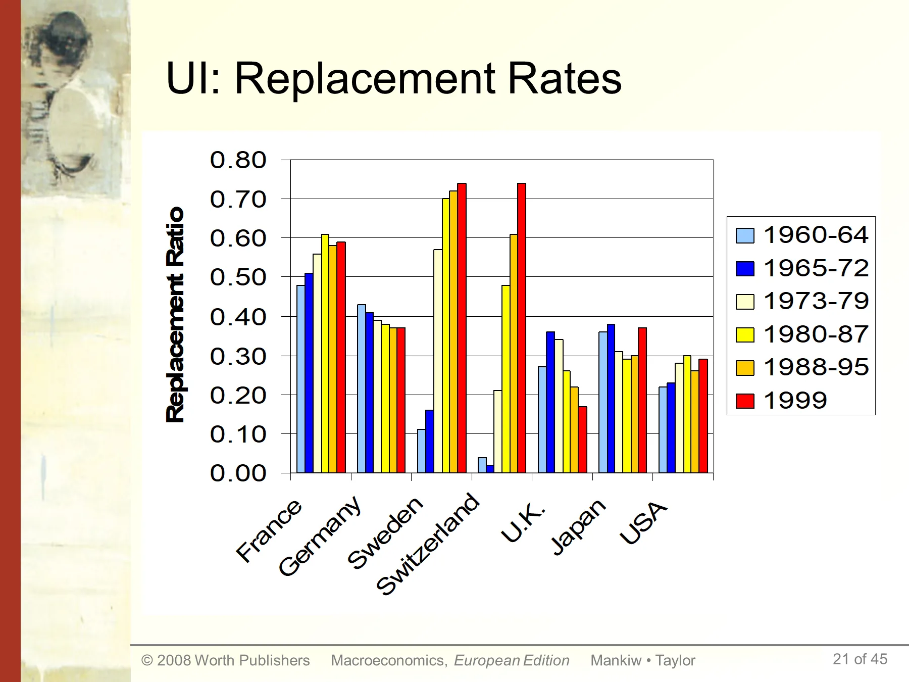
教师备注（原文＋译文）6 段
教师备注（原文照录）
Source: OECD.
This figures correspond to the benefit ratio in the first year after layoff. It is based on benefit payments made to those that became unemployed as a result of a collective layoff.
Note the dramatic increases in this ratios in countries as Sweden and Switzerland in the early 1970s. In the U.K., the replacement ratio has been falling during the last three decades.
教师备注（译文）
来源：OECD。
这些数字对应下岗后第一年的给付比率，基于向因集体裁员而失业者支付的救济金。
注意瑞典、瑞士等国在 1970 年代初该比率的急剧上升。在英国，替代率在过去三十年中持续下降。
- 替代率（replacement rate）的定义：失业金 / 原工资。它直接决定 UI 对 f 的抑制强度。
- 备注的三个观察：瑞典、瑞士 1970 年代初急升；英国近三十年持续下降；口径是「下岗后第一年、集体裁员者」。
- 与 7-42 呼应：欧洲高替代率是解释欧洲高失业率的因素之一。
7-22Why is there unemployment?（第 2 帧）
| 原文 | 中文对照 |
|---|---|
| Why is there unemployment? | 为什么会有失业？ |
| There are two reasons why f < 1: | f < 1 有两个原因： |
| 1. job search | 1. 求职 |
| 2. wage rigidity | 2. 工资刚性 |
| DONE | 已完成 |
| Next | 下一项 |
- 过渡页：求职（摩擦性）已讲完，接下来讲工资刚性（结构性）。
- 结构提示：7-23 ~ 7-31 全部围绕「实际工资高于均衡 → 岗位不足 → 配给」展开。
7-23Unemployment from real wage rigidity
| 原文 | 中文对照 |
|---|---|
| Unemployment from real wage rigidity | 实际工资刚性造成的失业 |
| Supply | 供给 |
| Labor | 劳动 |
| Real wage | 实际工资 |
| Unemployment | 失业 |
| Demand | 需求 |
| If the real wage is stuck above the eq'm level, then there aren't enough jobs to go around. | 如果实际工资卡在均衡水平之上，就没有足够的岗位可供分配。 |
| Rigid real wage | 刚性实际工资 |
| Amount of labor hired | 被雇用的劳动量 |
| Amount of labor willing to work | 愿意工作的劳动量 |
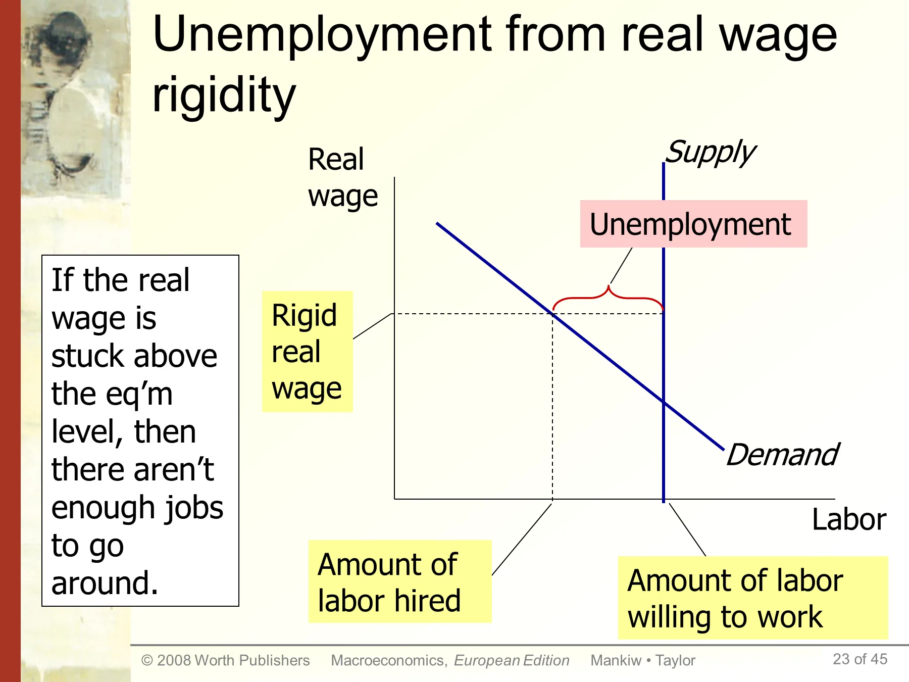
教师备注（原文＋译文）2 段
教师备注（原文照录）
Abbreviation: "eq'm" = equilibrium
教师备注（译文）
缩写：「eq'm」= equilibrium（均衡）
- 图形结构：向下倾斜的劳动需求、向上倾斜的劳动供给，但工资被钉在均衡之上。
- 缺口 = 愿意工作的人数 − 被雇用的人数 = 失业。这是「非自愿失业」的图形定义。
- 与第 3 章对比：那里工资弹性、供给垂直，市场出清；这里工资刚性，市场不出清。
7-24Unemployment from real wage rigidity（结构性失业）
| 原文 | 中文对照 |
|---|---|
| Unemployment from real wage rigidity | 实际工资刚性造成的失业 |
| Then, firms must ration the scarce jobs among workers. | 于是，企业必须在工人之间配给稀缺的岗位。 |
| If the real wage is stuck above the eq'm level, then there aren't enough jobs to go around. | 如果实际工资卡在均衡水平之上，就没有足够的岗位可供分配。 |
| Structural unemployment（结构性失业）: the unemployment resulting from real wage rigidity and job rationing（工作配额）. | 结构性失业：由实际工资刚性与工作配给造成的失业。 |
- 定义要完整：实际工资刚性 + 工作配给 → 结构性失业。
- 「配给」（rationing）是关键：岗位成为稀缺品，企业用非价格标准（资历、学历、关系）筛选，而不是用工资调整。
- 与摩擦性失业的对比：摩擦性是「找不到匹配」，结构性是「没有足够岗位」。
7-25Reasons for wage rigidity
| 原文 | 中文对照 |
|---|---|
| Reasons for wage rigidity | 工资刚性的原因 |
| 1. Minimum wage laws | 1. 最低工资法 |
| 2. Labor unions | 2. 工会 |
| 3. Efficiency wages | 3. 效率工资 |
- 三条原因即本章 7-26 ~ 7-31 的三节，必须能各举一例、各说一句机制。
- 记忆法：法律（最低工资）、集体谈判（工会）、企业自愿（效率工资）——前两者是制度性的，第三者是企业理性选择。
7-26The minimum wage
| 原文 | 中文对照 |
|---|---|
| The minimum wage | 最低工资 |
| In many countries, the minimum wage is well below the eq'm wage for most workers, so it cannot explain the majority of natural rate unemployment. | 在许多国家，最低工资远低于大多数工人的均衡工资，因此它无法解释自然失业率的大部分。 |
| However, the minimum wage may exceed the eq'm wage of unskilled workers. | 然而，最低工资可能高于非熟练工人的均衡工资。 |
| If so, then we would expect that increases in the minimum wage would increase unemployment among these groups. | 若如此，我们应预期最低工资的提高会增加这些群体的失业。 |
- 适用范围的关键限定：最低工资只对「均衡工资低于最低工资」的群体有约束力，主要是非熟练工人、青少年。
- 因此它只能解释自然失业率的一小部分，不是主因——这是常被夸大的政策争论点。
7-27The minimum wage in the real world
| 原文 | 中文对照 |
|---|---|
| The minimum wage in the real world: | 现实世界中的最低工资： |
| In Sept 1996, the minimum wage in the U.S. was raised from $4.25 to $4.75. Here's what happened: | 1996 年 9 月，美国最低工资从 4.25 美元提高到 4.75 美元。结果如下： |
| Unemployment rates, before & after | ||
|---|---|---|
| 3rd Q 1996 | 1st Q 1997 | |
| Teenagers | 16.6% | 17.0% |
| Single mothers | 8.5% | 9.1% |
| All workers | 5.3% | 5.3% |
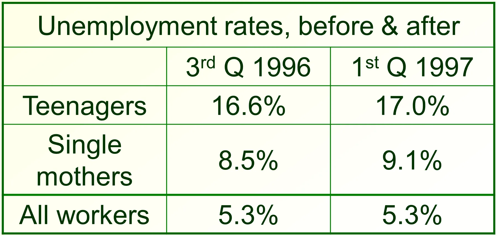
| 失业率，调整前后 | ||
|---|---|---|
| 1996 年三季度 | 1997 年一季度 | |
| 青少年 | 16.6% | 17.0% |
| 单身母亲 | 8.5% | 9.1% |
| 全部工人 | 5.3% | 5.3% |
| 原文 | 中文对照 |
|---|---|
| Other studies: A 10% increase in the minimum wage increases teenage unemployment by 1-3%. | 其他研究：最低工资提高 10%，青少年失业率上升 1–3%。 |
教师备注（原文＋译文）2 段
教师备注（原文照录）
Teens and single mothers are more likely to be in minimum wage jobs than workers from other demographic groups. These data show that these groups experienced higher unemployment after the minimum wage was raised in September 1996. These increases are not due to aggregate shocks, as the overall unemployment rate was the same in both periods.
教师备注（译文）
与其他人口群体相比，青少年与单身母亲更可能从事最低工资岗位。这些数据显示，1996 年 9 月最低工资提高后，这两个群体的失业率上升。这些上升不是总量冲击造成的，因为两个时期的总体失业率相同。
- 三个数字的对比是本页要害：青少年 16.6% → 17.0%（+0.4）；单身母亲 8.5% → 9.1%（+0.6）；全部工人 5.3% → 5.3%（不变）。
- 识别策略（备注）：总体失业率不变，排除了衰退解释，把差异归因于最低工资——这是一个准自然实验。
- 弹性估计：最低工资 +10% → 青少年失业 +1–3%。
7-28Labor unions
| 原文 | 中文对照 |
|---|---|
| Labor unions | 工会 |
| Unions exercise monopoly power to secure higher wages for their members. | 工会行使垄断力量为其成员争取更高工资。 |
| When the union wage exceeds the eq'm wage, unemployment results. | 当工会工资超过均衡工资时，就产生失业。 |
| Employed union workers are insiders whose interest is to keep wages high. | 在职的工会成员是「局内人」，其利益在于维持高工资。 |
| Unemployed non-union workers are outsiders and would prefer wages to be lower (so that labor demand would be high enough for them to get jobs). | 失业的非工会工人是「局外人」，他们更希望工资低一些（这样劳动需求才足以让他们找到工作）。 |
教师备注（原文＋译文）2 段
教师备注（原文照录）
Collective wage agreements tend to disfavour outsiders. Trade unions may ask for too high wages in one sector, which pushes employment to a level below the one that would be desired by outsiders.
教师备注（译文）
集体工资协议往往不利于局外人。工会可能在某部门要求过高的工资，把就业推到低于局外人期望的水平。
- 机制：工会的垄断力量 → 工资高于均衡 → 就业量低于均衡 → 失业。
- 「局内人—局外人」（insider–outsider）理论：在职者有权谈判，失业者没有，因此工资不会下降到出清水平。
- 备注点明分配后果：集体协议把利益从局外人转移给局内人。
7-29Union membership and wage ratios by industry, 2013
| industry | # employed (1000s) | U % of total | wage ratio |
|---|---|---|---|
| Private sector (total) | 104,737 | 6.9 | 122.6 |
| Government (total) | 20,450 | 37.0 | 121.1 |
| Construction | 6,244 | 14.0 | 151.7 |
| Mining | 780 | 7.2 | 96.4 |
| Manufacturing | 13,599 | 10.5 | 107.2 |
| Retail trade | 14,582 | 4.9 | 102.4 |
| Transportation | 4,355 | 20.4 | 123.5 |
| Finance, insurance | 6,111 | 1.1 | 90.2 |
| Professional services | 12,171 | 2.1 | 99.1 |
| Education | 4,020 | 13.0 | 112.6 |
| Health care | 15,835 | 7.5 | 114.9 |
wage ratio = 100 × (union wage) / (nonunion wage)
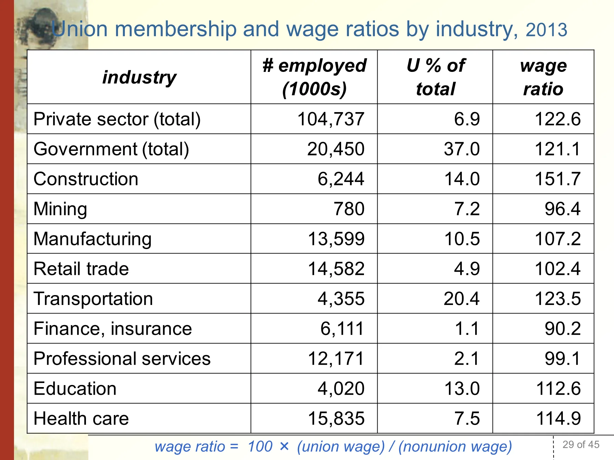
| 行业 | 就业人数（千人） | 工会成员占比（%） | 工资比 |
|---|---|---|---|
| 私营部门（合计） | 104,737 | 6.9 | 122.6 |
| 政府（合计） | 20,450 | 37.0 | 121.1 |
| 建筑 | 6,244 | 14.0 | 151.7 |
| 采矿 | 780 | 7.2 | 96.4 |
| 制造业 | 13,599 | 10.5 | 107.2 |
| 零售 | 14,582 | 4.9 | 102.4 |
| 运输 | 4,355 | 20.4 | 123.5 |
| 金融、保险 | 6,111 | 1.1 | 90.2 |
| 专业服务 | 12,171 | 2.1 | 99.1 |
| 教育 | 4,020 | 13.0 | 112.6 |
| 医疗 | 15,835 | 7.5 | 114.9 |
工资比 = 100 ×（工会成员工资）/（非工会成员工资）
教师备注（原文＋译文）14 段
教师备注（原文照录）
The wage ratio equals the average weekly earnings of union members divided by that of non-union members. (Here, "union members" does not include non-union members who are represented by unions; however, including them in these calculations does not substantively change the results.)
For example, in Transportation, 20.4% of workers are in unions, and on average they earn 23.5% more per week than non-union members in that industry.
In 2013, 11.8% of all workers in the U.S. were members of unions. The data on this slide show two things:
union workers typically earn more than non-union workers (about 22% more on average).
2) the greater the percentage of union workers in an industry, the higher the wage ratio (the correlation is about 0.5)
Source: BLS.gov
Note: Due to space constraints on the slide, a few industries were omitted.
教师备注（译文）
工资比等于工会成员的平均周薪除以非工会成员的平均周薪。（这里「工会成员」不包括由工会代表的非工会成员；不过把他们计入计算不会实质改变结果。）
例如，运输业有 20.4% 的工人是工会成员，他们平均每周比该行业的非工会成员多挣 23.5%。
2013 年，美国全部工人中有 11.8% 是工会成员。本页数据说明两点：
工会工人通常比非工会工人挣得多（平均约多 22%）。
2）某行业工会工人比例越高，工资比越高（相关系数约 0.5）
来源：BLS.gov
注：由于幻灯片空间有限，少数行业被省略。
- 两个规律（备注总结）：工会工人平均多挣约 22%；工会比例与工资比正相关（约 0.5）。
- 极值对照：建筑 151.7（最高）、金融保险 90.2（最低，低于 100 说明工会成员工资反而更低）。
- 全国工会化率：11.8%（2013）；政府部门 37.0% 远高于私营部门 6.9%。
7-30Percent of workers covered by collective bargaining, selected countries
| 国家 | 集体谈判覆盖率 |
|---|---|
| United States | 13% |
| United Kingdom | 31 |
| Switzerland | 49 |
| Spain | 73 |
| Sweden | 91 |
| Germany | 61 |
| France | 92 |
| Greece | 65 |
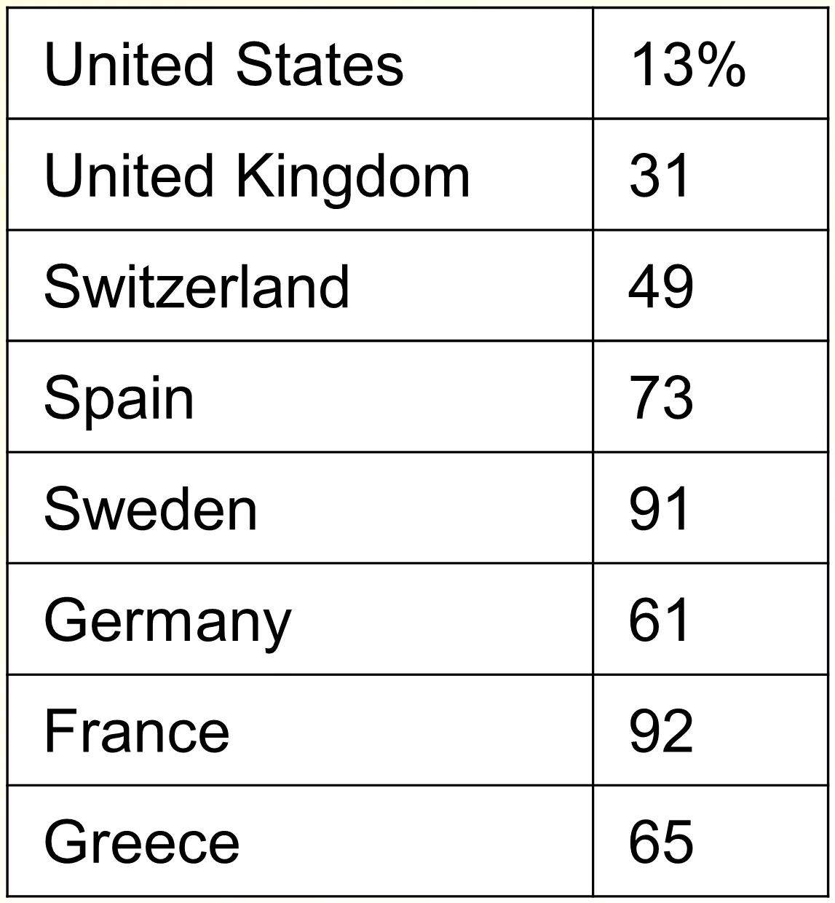
| 国家 | 集体谈判覆盖率 |
|---|---|
| 美国 | 13% |
| 英国 | 31 |
| 瑞士 | 49 |
| 西班牙 | 73 |
| 瑞典 | 91 |
| 德国 | 61 |
| 法国 | 92 |
| 希腊 | 65 |
教师备注（原文＋译文）4 段
教师备注（原文照录）
A subset of Table 7-1 (p.193), focusing on European countries.
Source: Same as the textbook.
教师备注（译文）
表 7-1（第 193 页）的一个子集，聚焦欧洲国家。
来源：同教材。
- 排序：法国 92% > 瑞典 91% > 西班牙 73% > 希腊 65% > 德国 61% > 瑞士 49% > 英国 31% > 美国 13%。
- 与 7-42 的联系：欧洲高覆盖率 + 高替代率 = 工资刚性强 = 失业率高。美国两项都低，故失业率对冲击的反应不同。
7-31Efficiency Wage（效率工资）Theory
| 原文 | 中文对照 |
|---|---|
| Efficiency Wage（效率工资）Theory | 效率工资理论 |
| Theories in which high wages increase worker productivity: | 认为高工资能提高工人生产率的各种理论： |
| attract higher quality job applicants | 吸引更高质量的求职者 |
| increase worker effort and reduce "shirking" | 提高工人努力程度、减少「偷懒」 |
| reduce turnover, which is costly | 降低代价高昂的流动率 |
| improve health of workers (in developing countries) | 改善工人健康（在发展中国家） |
| The increased productivity justifies the cost of paying above-equilibrium wages. | 生产率的提高使支付高于均衡工资的成本变得合理。 |
| The result: unemployment | 结果：失业 |
- 四条理由要能各说一句：逆向选择（吸引高素质）、道德风险（减少偷懒）、流动成本、健康与营养（发展中国家）。
- 关键逻辑：企业自愿支付高于均衡的工资，因为生产率提升的收益大于工资成本——所以这不是制度扭曲，而是市场均衡的一部分。
- 结果仍是失业：所有企业都这样做时，工资高于出清水平，岗位不足。
7-32Question for Discussion
| 原文 | 中文对照 |
|---|---|
| Question for Discussion: | 讨论题： |
| Use the material we've just covered to come up with a policy or policies to try to reduce the natural rate of unemployment. | 用我们刚讲过的材料，提出一项或几项旨在降低自然失业率的政策。 |
| Note whether your policy targets frictional or structural unemployment. | 说明你的政策针对的是摩擦性还是结构性失业。 |
教师备注（原文＋译文）12 段
教师备注（原文照录）
Possible answers:
Stop raising the (nominal) minimum wage, so that its real value will gradually erode to zero.
Regulate unions (just like other monopolies are regulated) to reduce unions' impact on wages.
Reduce the generosity of unemployment insurance.
Government employment agencies to increase the accessibility of information about job vacancies and available workers.
Public funding to help retrain workers displaced from jobs in declining industries.
教师备注（译文）
可能的答案：
停止提高（名义）最低工资，让其实际价值逐渐被侵蚀至零。
像监管其他垄断一样监管工会，以减少工会对工资的影响。
降低失业保险的慷慨程度。
政府就业机构，提高职位空缺与可用工人信息的可获取性。
公共资金帮助从衰退行业被排挤的工人再培训。
- 五个答案要按类型归类（这是题目要求）：
| 政策 | 针对 | 作用渠道 |
|---|---|---|
| 停提最低工资 | 结构性 | 降低工资刚性 |
| 监管工会 | 结构性 | 降低工资刚性 |
| 降低 UI 慷慨度 | 摩擦性 | 提高 f |
| 政府就业机构 | 摩擦性 | 提高 f（信息） |
| 公共再培训 | 摩擦性 | 提高 f（技能） |
- 注意「停提名义最低工资」的巧妙之处：不降名义值，靠通胀侵蚀实际值——这正好用上第 5 章的通胀「润滑」功能（5-50）。
7-33The duration of unemployment
| 原文 | 中文对照 |
|---|---|
| The duration of unemployment | 失业持续时间 |
| The data: | 数据： |
| More spells of unemployment are short-term than medium-term or long-term. | 短期失业的「次数」多于中期或长期。 |
| Yet, most of the total time spent unemployed is attributable to the long-term unemployed. | 然而，失业总时间的大部分应归于长期失业者。 |
| This long-term unemployment is probably structural and/or due to sectoral shifts among vastly different industries. | 这种长期失业很可能是结构性的，和/或源于差异极大的行业之间的部门转移。 |
| Knowing this is important because it can help us craft policies that are more likely to succeed. | 了解这一点很重要，因为它有助于我们设计更可能成功的政策。 |
教师备注（原文＋译文）6 段
教师备注（原文照录）
Regarding the point about structural unemployment and sectoral shifts:
Structural unemployment - workers are waiting for jobs to become available, but there just aren't enough jobs to go around; hence, this can be long-term unemployment.
Sectoral shifts across vastly different industries, e.g. a shift in demand from textiles to software design; obviously, jobs in these industries require vastly different skill sets. Sectoral shifts can occur among similar industries (e.g., demand shifts from desktop to laptop computers), but this is less likely to produce long-term unemployment.
教师备注（译文）
关于结构性失业与部门转移这一点：
结构性失业——工人在等待岗位出现，但岗位就是不够；因此这可能是长期失业。
差异极大行业之间的部门转移，例如需求从纺织转向软件设计；显然，这些行业的岗位所需技能大不相同。部门转移也可能发生在相似行业之间（例如需求从台式电脑转向笔记本电脑），但这不太可能造成长期失业。
- 核心悖论（考试高频）：多数失业「次数」是短期的，但多数失业「时间」属于长期失业者。
- 政策含义：想降低失业率要针对短期（提高 f）；想减少失业痛苦要针对长期（结构性）。
- 备注的判据：跨差异极大的行业（纺织 → 软件）才会造成长期失业；相似行业之间（台式 → 笔记本）不会。
7-34The duration of unemployment（图）
| 原文 | 中文对照 |
|---|---|
| The duration of unemployment | 失业持续时间 |
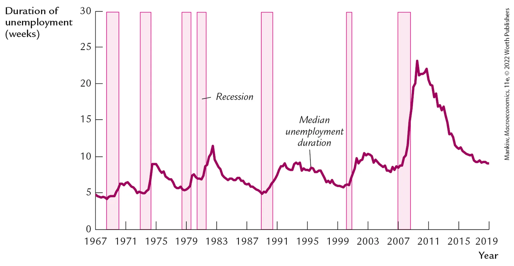
教师备注（原文＋译文）8 段
教师备注（原文照录）
Notice the average is often about 10 weeks (2.5 months) longer than median. The massive dip in 2020 was a result of the shutdown in March/April.
Source: St. Louis Fed FRED
UEMPMED
UEMPMEAN
教师备注（译文）
注意平均值常比中位数长约 10 周（2.5 个月）。2020 年的巨大下凹是 3/4 月停摆的结果。
来源：圣路易斯联储 FRED
UEMPMED（中位数）
UEMPMEAN（平均值）
- 两条线：中位失业时长（UEMPMED）与平均失业时长（UEMPMEAN），后者始终高于前者。
- 关键读数：平均值比中位数长约 10 周——这正是 7-33 悖论的图形证据（少数长期失业者拉高平均值）。
- 2020 年 3–4 月停摆造成平均值的急剧下凹（大量新失业者都是短期的）。
7-35The long-term (27 weeks or more) unemployed
| 原文 | 中文对照 |
|---|---|
| The long-term (27 weeks or more) unemployed | 长期失业者（27 周及以上） |
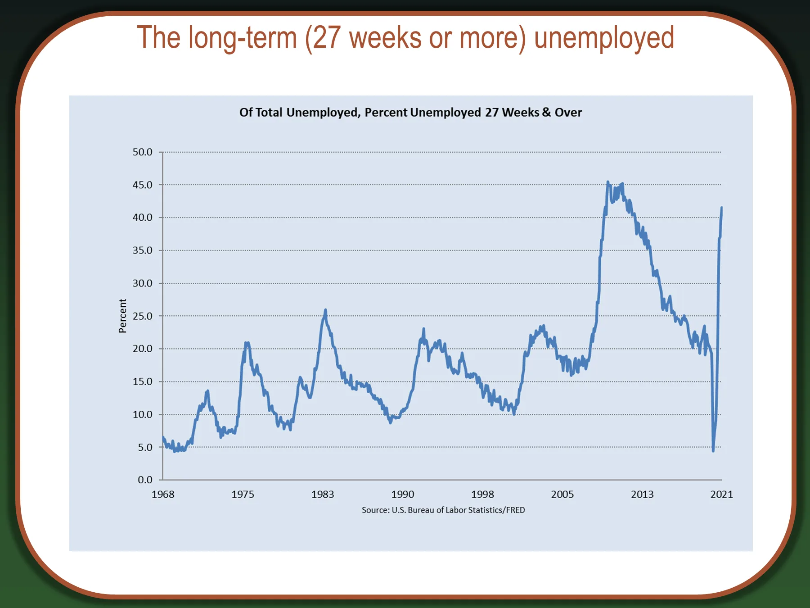
教师备注（原文＋译文）6 段
教师备注（原文照录）
Remind students that standard unemployment benefits last 26 weeks. Both the Financial Crisis of 2008 and Covid resulted in a lot of people being unemployed for long periods of time.
Source: St. Louis Fed FRED:
LNS13025703
教师备注（译文）
提醒学生：标准失业保险金持续 26 周。2008 年金融危机与新冠都导致大量人口长期失业。
来源：圣路易斯联储 FRED：
LNS13025703
- 阈值的选择有制度原因：标准 UI 为 26 周，27 周以上即「超出常规救济」。
- 两次高峰：2008 年金融危机后与2020 年新冠后，长期失业占比都大幅上升。
- 序列代码：LNS13025703。
7-36TREND: The natural rate rises over 1960–84, then falls over 1985–2005
| 原文 | 中文对照 |
|---|---|
| TREND: The natural rate rises over 1960–84, then falls over 1985–2005 | 趋势：自然率在 1960–84 年上升，1985–2005 年下降 |
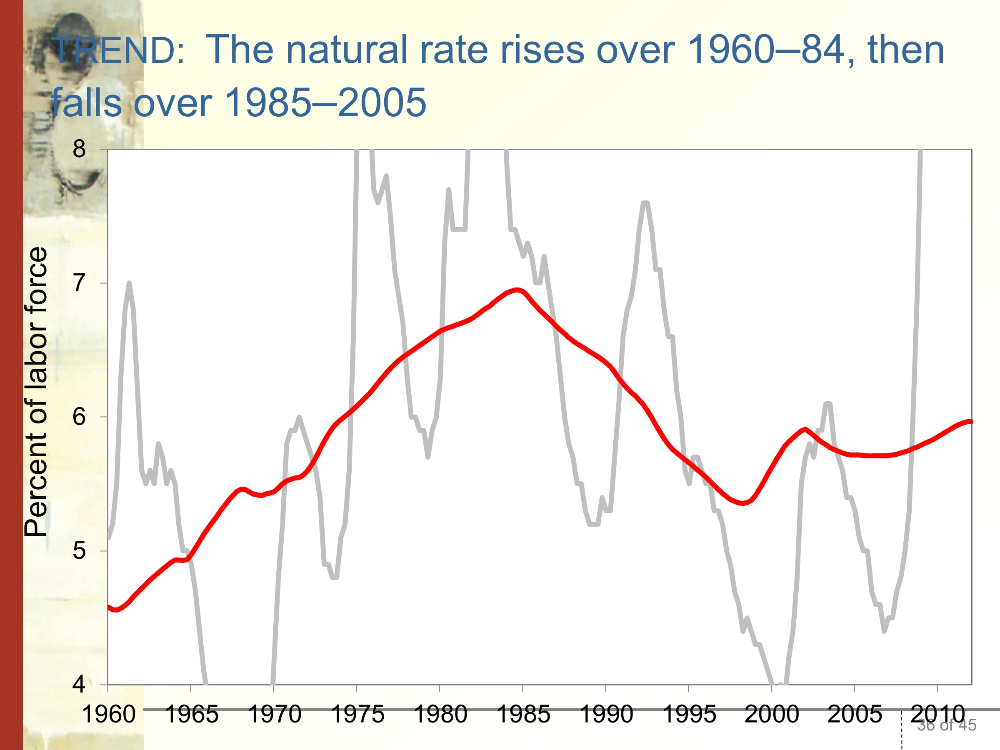
教师备注（原文＋译文）8 段
教师备注（原文照录）
The purpose of this slide is to establish the trend behavior of the natural rate in recent decades: rising until the early 80s, then falling from the mid-80s through the early 2000s.
(It is probably too soon to say what happened to the trend in 2008-2010, due to the steep recession and to the fact that the natural rate data used in this graph were estimated as the average of unemployment rates from 10 years before to 10 years after each date, with future unemployment rates set at 5.5 percent.)
The following slides will show that the theories in this chapter are (mostly) consistent with the trend behavior of the natural rate.
The graph on this slide is similar to Figure 7-1 (near the beginning of this PowerPoint presentation), with modifications to the vertical scale and colors to highlight the trend behavior.
教师备注（译文）
本页的目的是确立近几十年自然率的趋势行为：上升至 1980 年代初，然后从 1980 年代中期到 2000 年代初下降。
（现在说 2008–2010 年的趋势如何可能为时过早，因为衰退剧烈，而且本图使用的自然率数据是以每个时点前后各 10 年失业率的平均值估计的，未来失业率被设定为 5.5%。）
后面几页将说明本章的理论（大体上）与自然率的趋势行为一致。
本页的图与图 7-1（本幻灯片开头附近）相似，只是调整了纵轴刻度与颜色以突出趋势。
- 趋势的三段：1960–1984 上升（约 4% → 7%）；1985–2005 下降（约 7% → 4%）；2005 年后基本平稳。
- 数据构造（备注）：自然率是用前后各 10 年失业率均值估计的，未来值设为 5.5%——所以它是「平滑的趋势」，不是当年的实际值。
- 接下来四页（7-37 ~ 7-40）分别用四个因素解释这条趋势。
7-37EXPLAINING THE TREND: The minimum wage
| 原文 | 中文对照 |
|---|---|
| EXPLAINING THE TREND: The minimum wage | 解释趋势：最低工资 |
| The real minimum wage and natural u-rate have similar trends. | 实际最低工资与自然失业率有相似的趋势。 |
| $ | 美元 |
| trend | 趋势 |
| minimum wage in 2012 dollars | 以 2012 年美元计的最低工资 |
| minimum wage in current dollars | 以当期美元计的最低工资 |
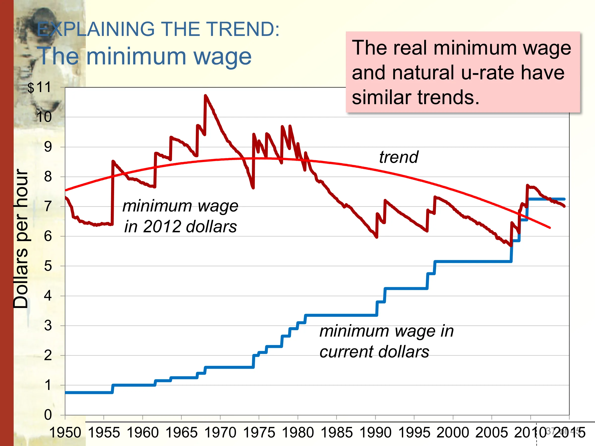
教师备注（原文＋译文）6 段
教师备注（原文照录）
The trend in the real minimum wage rises until the mid to late 1970s, then falls. This is fairly similar to the trend of the natural rate of unemployment.
The U.S. Department of Labor has lots of good information on the minimum wage, at: http://www.dol.gov/dol/topic/wages/minimumwage.htm
[Two sources of data on the federal minimum wage are slightly different in the late 1960s. These small differences have no significant impact on the trend, or the message of this graph.]
教师备注（译文）
实际最低工资的趋势上升到 1970 年代中后期，然后下降。这与自然失业率的趋势相当相似。
美国劳工部有大量关于最低工资的好资料：http://www.dol.gov/dol/topic/wages/minimumwage.htm
［两个联邦最低工资数据来源在 1960 年代末略有差异。这些小差异对趋势或本图的信息没有显著影响。］
- 两条线：名义最低工资（阶梯状，只在立法调整时跳升）与实际最低工资（2012 年美元）（先升后降，被通胀侵蚀）。
- 与自然率的对应：1970 年代末见顶 → 之后下降，与 7-36 的趋势同形。
- 机制：实际最低工资上升 → 工资刚性增强 → 结构性失业上升。
7-38EXPLAINING THE TREND: Union membership
| 原文 | 中文对照 |
|---|---|
| EXPLAINING THE TREND: Union membership | 解释趋势：工会成员比例 |
| Since early 1980s, the natural rate and union membership have both fallen. | 自 1980 年代初以来，自然率与工会成员比例都下降了。 |
| But, from 1950s to about 1980, the natural rate rose while union membership fell. | 但从 1950 年代到约 1980 年，自然率上升而工会成员比例下降。 |
| Union membership selected years | |
|---|---|
| year | percent of labor force |
| 1930 | 12.0 |
| 1945 | 35.0 |
| 1954 | 35.0 |
| 1970 | 27.0 |
| 1983 | 20.1 |
| 2013 | 11.3 |
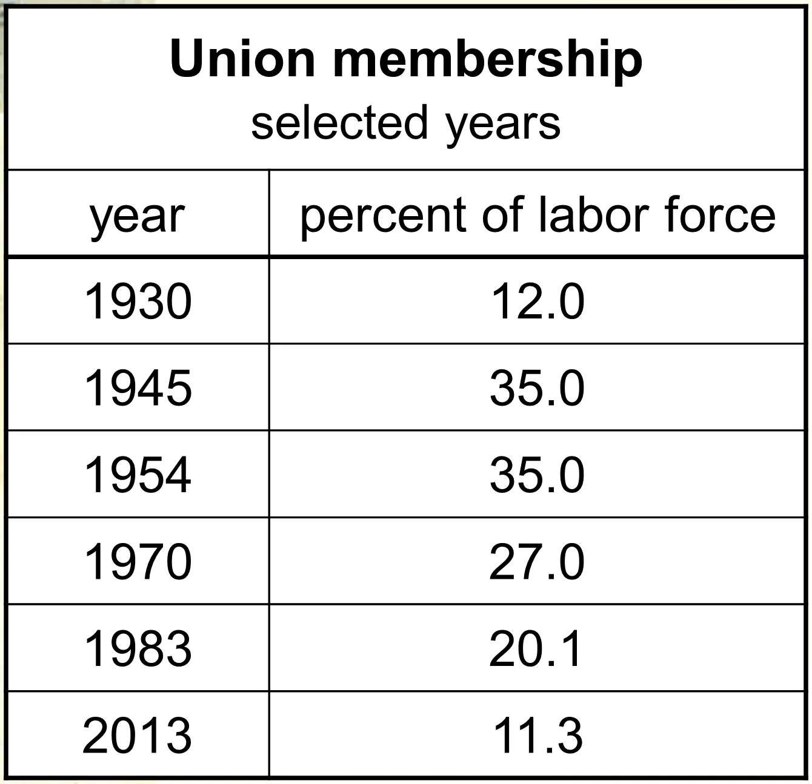
| 工会成员比例（部分年份） | |
|---|---|
| 年份 | 占劳动力百分比 |
| 1930 | 12.0 |
| 1945 | 35.0 |
| 1954 | 35.0 |
| 1970 | 27.0 |
| 1983 | 20.1 |
| 2013 | 11.3 |
教师备注（原文＋译文）14 段
教师备注（原文照录）
A table on an earlier slide showed a positive correlation between the union wage premium and union members' share of the labor force across industries.
We would expect a similar relationship over time in the aggregate data: as the ratio of union members to all workers rises (falls), the union wage premium and hence natural rate of unemployment should also rise (fall).
The data since the early 1980s are consistent with this expectation. However, the data from the 1950s to the early 1980s are not: the natural rate rose, but union membership declined.
Does the inconsistency from the 1950s to the early 1980s mean the theory is irrelevant? Not necessarily, as other determinants of the natural rate were not constant during the period.
source:
AFL-CIO website, http://www.aflcio.org
and Current Population Survey, Bureau of Labor Statistics
教师备注（译文）
前面某一页的表格显示，各行业中工会工资溢价与工会成员占劳动力的比例正相关。
我们预期在总量数据的时间序列上也有类似关系：工会成员占全部工人的比例上升（下降）时，工会工资溢价从而自然失业率也应上升（下降）。
1980 年代初以来的数据与这一预期一致。然而 1950 年代到 1980 年代初的数据不一致：自然率上升，而工会成员比例下降。
1950 年代到 1980 年代初的不一致是否意味着该理论无关？不一定，因为该时期自然率的其他决定因素并非常数。
来源：
AFL-CIO 网站，http://www.aflcio.org
以及劳工统计局《当前人口调查》
- 六个数据点：1930 年 12.0% → 1945/1954 年 35.0%（峰值）→ 1970 年 27.0% → 1983 年 20.1% → 2013 年 11.3%。
- 关键判断（备注）：1980 年代后理论成立，1950–80 年不成立——因为其他因素（人口结构、最低工资、部门转移）同时变化。
- 这是「单一因素解释力有限」的方法论范例：不能因为一段时期不符就否定理论。
7-39EXPLAINING THE TREND: Sectoral shifts
| 原文 | 中文对照 |
|---|---|
| EXPLAINING THE TREND: Sectoral shifts | 解释趋势：部门转移 |
| 2006–2012: oil price volatility increases – will the natural u-rate rise again? | 2006–2012：油价波动加剧——自然失业率会再次上升吗？ |
| 1970–1986: volatile oil prices create jarring sectoral shifts | 1970–1986：油价剧烈波动造成剧烈的部门转移 |
| Price per barrel of oil, in 2011 dollars | 每桶油价，以 2011 年美元计 |
| 1986–2005: oil prices less volatile, so fewer sectoral shifts | 1986–2005：油价波动较小，部门转移较少 |
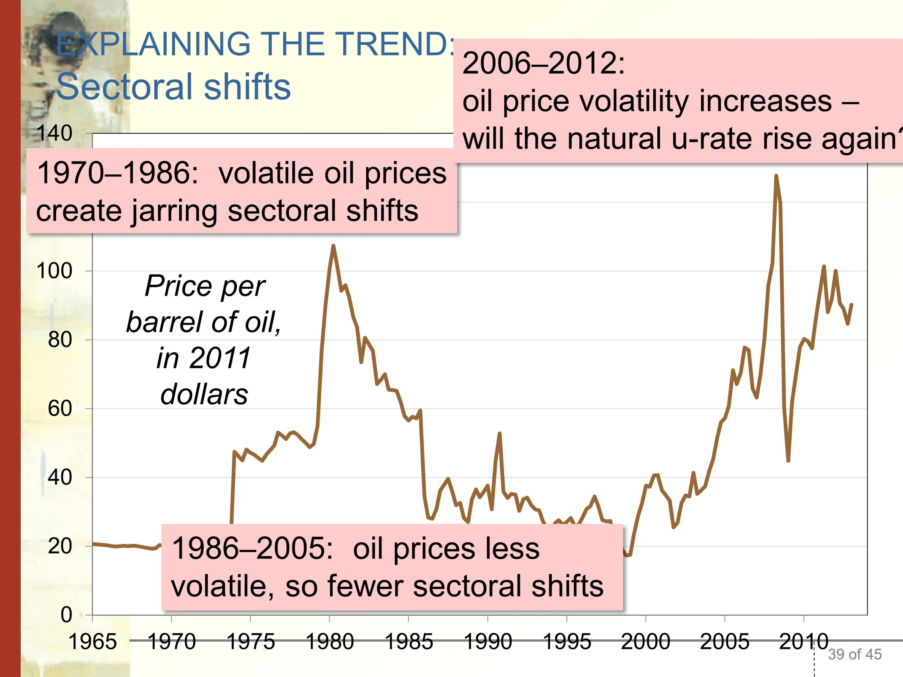
教师备注（原文＋译文）18 段
教师备注（原文照录）
Earlier in the chapter, we learned that sectoral shifts are a source of job separations and lead to frictional unemployment. One would expect that a decrease in the frequency and magnitude of sectoral shifts would be associated with fewer job separations, less frictional unemployment, and a lower natural rate of unemployment.
Unfortunately, there is no single "index of sectoral shifts." However, we know that large changes in oil prices are one important source of sectoral shifts. A significant fall in the price of oil causes a decrease in demand for workers at oil fields in Oklahoma and Texas, and an increase in demand for workers at factories that produce SUVs. A significant increase in oil prices would do the opposite.
The graph shows data on the price of oil since 1965.
During 1970-1985, the real price of oil fluctuated between $20 and $100. Also during this time, the natural rate of unemployment was rising.
During 1986-2002, the real price of oil was in the $20-40 range except for a brief spike during the Gulf War. Also during this time, the natural rate of unemployment was falling.
The data are roughly consistent with the notion that sectoral shifts contribute to the natural rate.
Note the recent increase in oil prices: from about $22 to $70 during 2002-2006:1. This represents a sectoral shift and may contribute to an increase in the natural rate of unemployment. Or maybe not, as oil consumption per dollar of GDP is lower today than in the 1970s and 1980s.
source: Dow Jones & Company
obtained from: http://research.stlouisfed.org/fred2/
教师备注（译文）
本章前面我们学过，部门转移是离职的来源，并导致摩擦性失业。人们会预期部门转移的频率与幅度下降，会伴随离职减少、摩擦性失业减少、自然失业率下降。
遗憾的是，没有单一的「部门转移指数」。但我们知道，油价的大幅变化是部门转移的一个重要来源。油价大幅下跌会减少对俄克拉何马与得克萨斯油田工人的需求，增加对生产 SUV 的工厂工人的需求。油价大幅上涨则相反。
图中显示 1965 年以来的油价数据。
1970–1985 年间，实际油价在 20 至 100 美元之间波动。同一时期，自然失业率在上升。
1986–2002 年间，实际油价在 20–40 美元区间，只有海湾战争期间短暂飙升。同一时期，自然失业率在下降。
数据与「部门转移推高自然率」的观点大体一致。
注意近年的油价上涨：2002 年至 2006 年一季度从约 22 美元涨到 70 美元。这代表一次部门转移，可能推高自然失业率。也可能不会，因为今天每美元 GDP 的石油消耗低于 1970–80 年代。
来源：道琼斯公司
取自：http://research.stlouisfed.org/fred2/
- 三个时期与自然率的对应：1970–1986 油价剧烈波动（20–100 美元）↔ 自然率上升；1986–2005 油价平稳（20–40 美元）↔ 自然率下降；2006–2012 波动再起 → 自然率是否回升待观察。
- 传导机制（备注）：油价跌 → 油田工人需求↓、SUV 工厂工人需求↑；油价涨则相反。
- 重要限定：每美元 GDP 的石油消耗已低于 1970–80 年代，所以同样的油价冲击造成的部门转移可能更小。
7-40EXPLAINING THE TREND: Demographics
| 原文 | 中文对照 |
|---|---|
| EXPLAINING THE TREND: Demographics | 解释趋势：人口结构 |
| 1970s: The Baby Boomers were young. Young workers change jobs more frequently (high value of s). | 1970 年代：婴儿潮一代年轻。年轻工人换工作更频繁（s 值高）。 |
| Late 1980s through today: Baby Boomers aged. Middle-aged workers change jobs less often (low s). | 1980 年代末至今：婴儿潮一代变老。中年工人换工作较少（s 值低）。 |
教师备注（原文＋译文）2 段
教师备注（原文照录）
For more details on this, see the book.
教师备注（译文）
更多细节见教材。
- 机制最简洁：人口年龄结构 → 离职率 s → 自然失业率 u = s/(s+f)。
- 1970 年代婴儿潮一代 20 多岁 → s 高 → u 高；1990 年代后他们进入中年 → s 低 → u 低。
- 这条解释与 7-36 的趋势时间吻合度最高，也是四个因素中最难被政策改变的一个。
7-41Unemployment in Europe, 1960–2013
| 原文 | 中文对照 |
|---|---|
| Unemployment in Europe, 1960–2013 | 欧洲失业率，1960–2013 |
| Percent of labor force | 占劳动力的百分比 |
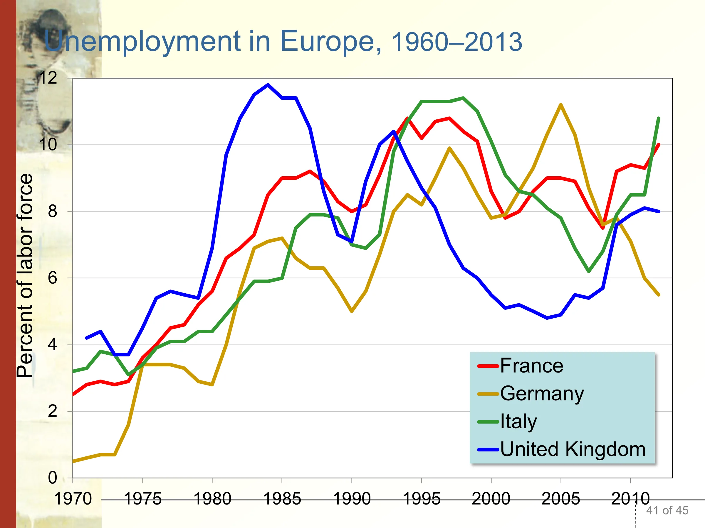
教师备注（原文＋译文）6 段
教师备注（原文照录）
Figure 7-6 on p.203.
Source: Bureau of Labor Statistics,
http://www.bls.gov/fls/home.htm
教师备注（译文）
第 203 页图 7-6。
来源：劳工统计局，
http://www.bls.gov/fls/home.htm
- 四国曲线：法国、德国、意大利、英国，1960 年代均在 1%–4%，2000 年代升至 8%–11%。
- 关键转折：1970 年代石油冲击后持续上台阶，且再未回到 1960 年代水平——这是「滞后效应」（hysteresis）的典型证据。
- 与美国对照：美国失业率在衰退后能回落，欧洲多数国家不能。
7-42Why unemployment rose in Europe but not in the U.S.
| 原文 | 中文对照 |
|---|---|
| Why unemployment rose in Europe but not in the U.S. | 为什么欧洲失业率上升而美国没有 |
| Shock Technological progress has shifted labor demand from unskilled to skilled workers in recent decades. | 冲击：近几十年来技术进步使劳动需求从非熟练工人转向熟练工人。 |
| Effect in United States An increase in the "skill premium" – the wage gap between skilled and unskilled workers. | 在美国的影响：技能溢价上升——熟练与非熟练工人之间的工资差距扩大。 |
| Effect in Europe Higher unemployment, due to generous govt benefits for unemployed workers and strong union presence. | 在欧洲的影响：失业率上升，原因是政府对失业工人的慷慨福利与强大的工会存在。 |
- 同一冲击、两种结果——这是本章最重要的对比：
| 美国 | 欧洲 | |
|---|---|---|
| 冲击 | 技能偏向型技术进步 | 同 |
| 工资调整 | 灵活（非熟练工资下降） | 刚性（最低工资、工会、高福利） |
| 结果 | 技能溢价上升，失业率变化小 | 失业率上升 |
- 结论：失业率差异不来自冲击本身，而来自工资调整机制。这与 7-25 的三条刚性原因直接对应。
7-43Chapter summary（第 1 帧）
| 原文 | 中文对照 |
|---|---|
| Chapter summary | 本章总结 |
| 1. The natural rate of unemployment | 1. 自然失业率 |
| the long-run average or "steady state" rate of unemployment | 长期平均或「稳态」失业率 |
| depends on the rates of job separation and job finding | 取决于离职率与入职率 |
| 2. Frictional unemployment | 2. 摩擦性失业 |
| due to the time it takes to match workers with jobs | 由于把工人与岗位匹配所需的时间 |
| may be increased by unemployment insurance | 可能因失业保险而增加 |
- 两条要点对应两个公式：u = s/(s+f)（7-9）与 UI → f↓ → u↑（7-18）。
- 摩擦性失业的政策含义：改善匹配（提高 f），而不是消除失业本身。
7-44Chapter summary（第 2 帧）
| 原文 | 中文对照 |
|---|---|
| Chapter summary | 本章总结 |
| 3. Structural unemployment | 3. 结构性失业 |
| results from wage rigidity - the real wage remains above the equilibrium level | 由工资刚性造成——实际工资停留在均衡水平之上 |
| causes: minimum wage, unions, efficiency wages | 原因：最低工资、工会、效率工资 |
| 4. Duration of unemployment | 4. 失业持续时间 |
| most spells are short term | 多数失业期是短期的 |
| but most weeks of unemployment are attributable to a small number of long-term unemployed persons | 但失业总周数的大部分应归于少数长期失业者 |
- 第 3 条是三条刚性原因的汇总（7-25）。
- 第 4 条是 7-33 的悖论：次数 vs 时间的区分必须能复述。
7-45Chapter summary（第 3 帧）
| 原文 | 中文对照 |
|---|---|
| Chapter summary | 本章总结 |
| 5. Behavior of the natural rate in the U.S. | 5. 美国自然失业率的行为 |
| rose from 1960 to early 1980s, then fell | 1960 年至 1980 年代初上升，之后下降 |
| possible explanations: trends in real minimum wage, union membership, prevalence of sectoral shifts, and aging of the Baby Boomers | 可能的解释：实际最低工资的趋势、工会成员比例、部门转移的普遍程度、婴儿潮一代的老龄化 |
| 6. Continental European unemployment | 6. 欧洲大陆的失业 |
| rose sharply after oil shocks of the 1970s and stayed high in many countries | 在 1970 年代石油冲击后急剧上升，并在许多国家保持高位 |
| possibly due to generous unemployment benefits, strong union presence, and a technology-driven shift in demand away from unskilled workers | 可能由于慷慨的失业救济、强大的工会存在，以及技术驱动的需求从非熟练工人转移 |
- 第 5 条列四个解释，与 7-37 ~ 7-40 一一对应：最低工资（7-37）、工会（7-38）、部门转移（7-39）、人口结构（7-40）。
- 第 6 条列三个原因：高福利、强工会、技能偏向型技术冲击，与 7-42 对应。
- 全章收束句：自然失业率不是常数，它随制度与人口结构变化——所以「降低自然率」是长期制度工程，不是短期需求管理。